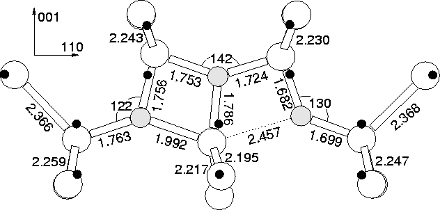

The relaxed structure is shown in Figure 9.13 with eigenvalues
in Figure 9.10a. When unconstrained, the central Si
atom moves  0.05 Å off the C2 axis to form a structure
somewhere between the Snyder-Stavola and an oxygen square with a
flanking Oi, saving 0.063 eV in the process. This is consistent
with calculations by Chadi who found an energy saving of 0.07 eV for
the same process[211]. This is presumably the diffusion
barrier for reorientation of the defect between the two off-site
configurations, and hence it would appear time averaged C2v.
0.05 Å off the C2 axis to form a structure
somewhere between the Snyder-Stavola and an oxygen square with a
flanking Oi, saving 0.063 eV in the process. This is consistent
with calculations by Chadi who found an energy saving of 0.07 eV for
the same process[211]. This is presumably the diffusion
barrier for reorientation of the defect between the two off-site
configurations, and hence it would appear time averaged C2v.
The vibrational modes of the Snyder-Stavola structure are given in Table 9.5. The high frequency mode is due to out-of-plane wag of the core trivalent oxygen atom, and seems remarkably high for such a motion. The modes are not in good agreement with either TD1/TD2, which exhibit two modes each at 975/988 and 716/724 cm-1. The only possibility for correlation is if the calculated modes at 978.9 and 771.6 cm-1 are those that have been observed, and there are additional experimental modes in the 850-900 cm-1 range which have not yet been observed. The TD2 988 cm-1 mode drops by 43 cm-1 when 16O is replaced with 18O, which is not very good agreement with the 978.9 cm-1 mode shift of 46.9 cm-1.
We therefore conclude on the basis of the vibrational modes that the Snyder-Stavola model is unlikely to be TD2, but may be TD1 if there are further vibrational modes which have not yet been detected by experiment.
| 3cLocal Vibrational Modes (cm-1) | Dipole moment squared | ||
| 16O | 17O | 18O | for 16 O |
| 1230.2 | 26.2 | 49.8 | 0.421 |
| 1038.5 | 25.2 | 48.2 | 0.031 |
| 978.9 | 24.6 | 46.9 | 0.140 |
| 946.2 | 26.0 | 49.6 | 0.005 |
| 899.2 | 20.6 | 39.3 | 0.120 |
| 884.6 | 22.3 | 42.7 | 0.143 |
| 771.6 | 17.4 | 32.8 | 0.190 |
| 755.6 | 17.8 | 33.8 | 0.117 |
| 697.5 | 13.4 | 24.5 | 0.034 |
| 630.8 | 1.8 | 3.8 | 0.005 |
| 601.2 | 2.9 | 6.4 | 0.014 |
| 560.7 | 0.9 | 1.9 | 0.001 |
| 538.7 | 0.3 | 0.6 | 0.020 |
| 527.6 | 0.2 | 0.5 | 0.001 |
|  |